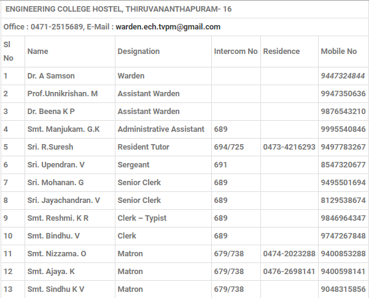

About Hostel
The Women’s hostel is located on the front side of the college at a beautiful location amidst greenish scenery.This hostel provides comfortable and conducive atmosphere to develop the innate abilities of inmates. Indoor and outdoor facilities for sports and cultural activities (Reading rooms, Fitness centers with modern scientific equipments) are available in the hostel. The ladies hostel has 200 rooms which can accommodate 700 students. This hostel is under the control of the Warden, assisted by two assistant wardens and Resident Tutors(RTs). The mess is run by the mess committee elected from among the students under the directions of the General Secretary, Mess Director and other members of the committee. A hygienic atmosphere is available in the hostels. The Resident tutors (RTs) look after the hostels and maintain a peaceful atmosphere in the hostels. Hostel day festivities are conducted in hostel with the active participation of inmates and faculty of the college. WARDEN-Dr. A Samson(Professor in Mechanical Engineering)Hostel Office Staff
Address
Ladies HostelCollege of Engineering
Kulathoor Road
Sreekaryam P.O
Thiruvananthapuram
Pincode:695017
Phone:0471 2428945